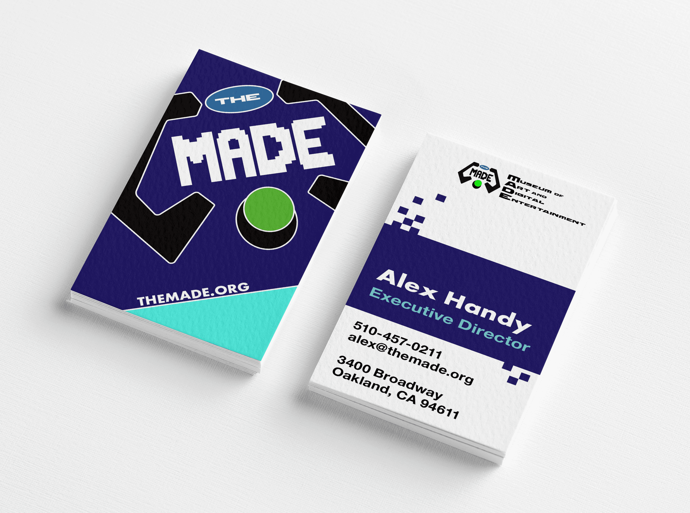
THE MADE: Museum Redesign
This project was a full branding overhaul of an existing museum. The MADE or Museum of Art and Digital Entertainment
is a 501c3 nonprofit located in Oakland, California which is dedicated to the preservation of video game history and
to educating the public on how video games are created. During my research, it appeared they had no clear brand identity
but their exhibits were clean, tactile, and balanced between both retro and modern gaming devices. My goal was to create a
brand for the MADE which appealed to a broad range of video game appreciators, young and old alike. It needed to be colorful
and enticing for children but not too silly for adults; it needed to represent video game qualities without using trademarked
characters or other already copyrighted material.
The color palette was inspired by older sprite games, such as from the first generation Pokemon GameBoy collection.
The typography was Futura PT and Helvetica Neue - both futuristic-feeling fonts that are easy for children to read.
The project includes a logo, business card, brochure, letterhead, envelope, and three pages of a website.
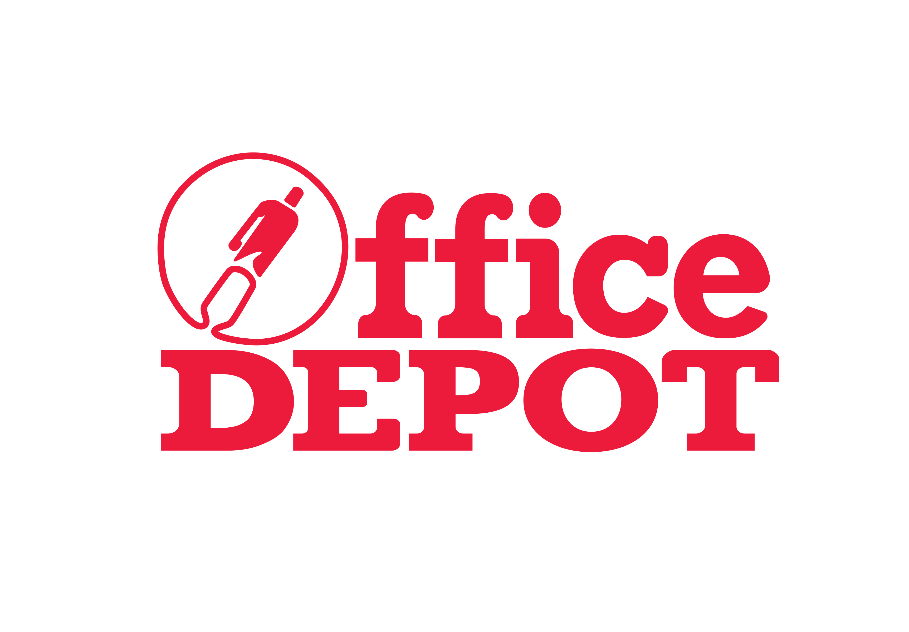
Office Depot Redesign
The goal was to design a more visually interesting logo of an already well-established company without diminishing the
company’s sense of professionalism. In addition, we were to create an icon set used for an infographic for the chosen
brand based on research about the company. I chose Office Depot. I brought in a pictorial mark to the logo with the pen
design, which is meant to evoke in the viewer perhaps the experience of shopping for school supplies or signing a business
deal, activities which are associated with Office Depot and what they offer. The icon set simplified Office Depot’s main
business services into clear and understandable images. These were then organized onto an infographic which advertised to
customers what Office Depot offered in services during the COVID-19 pandemic (they remained open during shut-down as an
essential business). For the infographic in particular, I used Office Depot’s preferred color palette for marketing materials,
which I had learned in my initial research.
Realistic Illustration (Teapot)
The objective was to create a photo realistic illustration of a product for a marketing campaign and learn to master
Adobe Illustrator as a program. My biggest challenge in crafting this teapot was using curved gradients for the spout
and illustrating glass with the right highlights, shadows, and opacities. This was a heady challenge and considerably
one of my best outcomes.
Forged Cyber Security Logo
This logo design was a personal assignment I completed for my brother and his idea at the time for a cyber-security company.
He wanted it to be a dynamic logo that showed customers his company would provide a robust digital defense. I played off of
the company name and centered the design on forged items like the hammer and shield. The color palette used my brother’s favorite
color orange and is also often seen used by other competitors in the field.
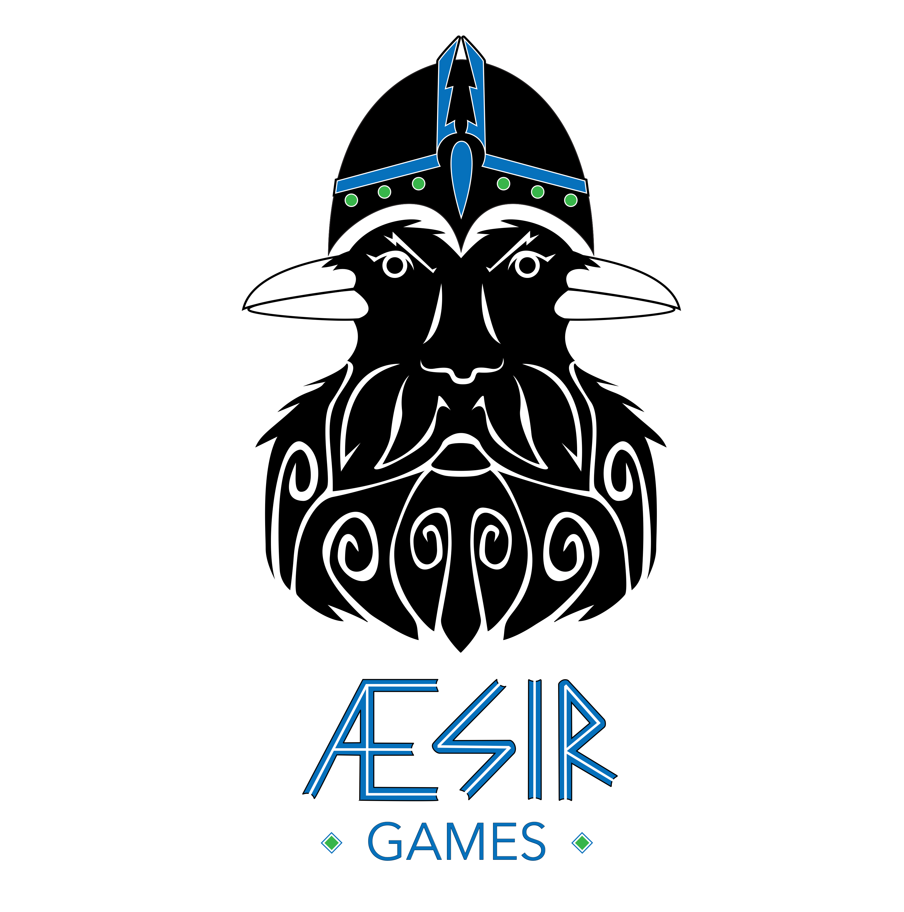
Aesir Games Logo
Aesir Games is an imaginary board game company. Æsir are what the gods are called in the Norse religion. My original logo
design represents the Norse god, Odin and his ravens, Huginn and Muninn (which make up his face). The ravens act as his
eyes and bring him information from around the work, making Odin a formidable strategist. Board game enthusiasts are often
formidable strategists themselves and I knew this customer base would appreciate the connection to the old tales.
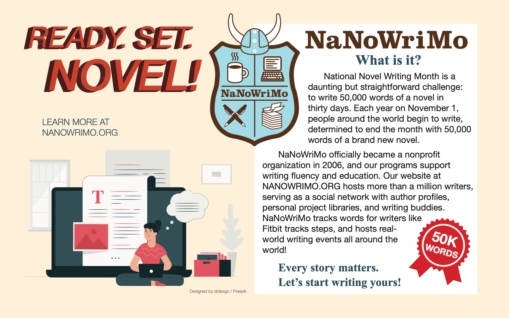
NaNoWriMo Postcard
NaNoWriMo or the National Novel Writing Month is a long-standing organization and free online challenge which is
not often known in the mainstream. I designed an informational postcard to provide an easy introduction to it and
hopefully entice new writers.
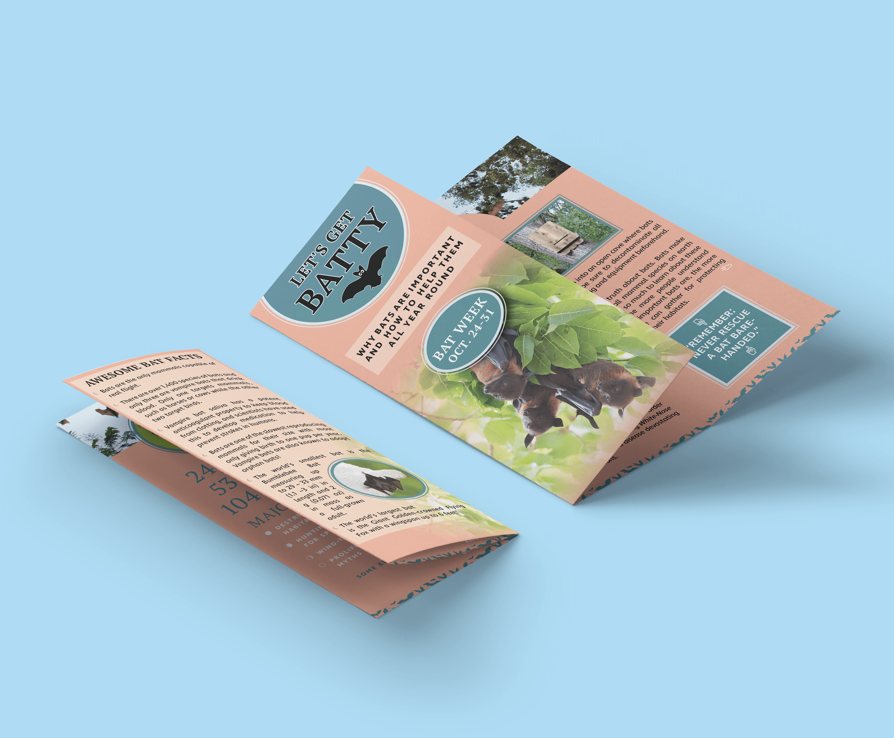
Let’s Get Batty Brochure
While designing this informational brochure, I imagined it adorning the shelves at a local zoo, hiking trail, or wildlife
preserve. Bats have been a favorite animal of mine since childhood, and there are many misunderstandings about the species.
I deliberately chose a bright color palette of peach and teal blue in order to counteract the common association of bats to
darkness and danger. The most difficult part of this assignment was balancing the overabundance of text and sorting out the
information into approachable segments without losing important meaning.
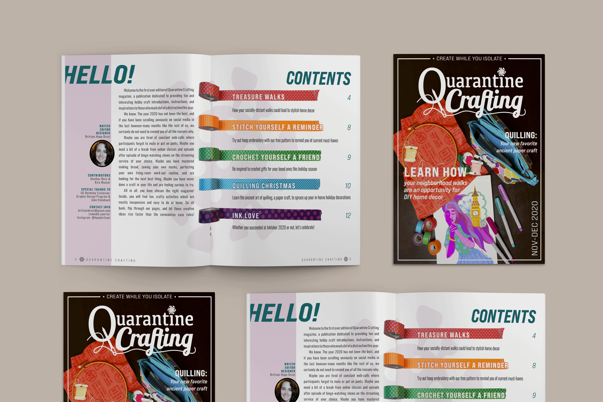
Quarantine Crafting Magazine
Quarantine Crafting Magazine was a big undertaking where we were to create covers and spreads of an original editorial design
all the way down to the logo. The 2020 shutdown in light of the Alpha variant of COVID-19 was underway at the time of the project,
thus I decided to make a magazine to commemorate this unique period in history while also inputting a bit of fun and levity into it
where I could. I had friends and family collaborate by providing their own pictures and quotes of what they did to pass the time
during lock-down.
The chosen fonts were Bebas Neue Pro and Oswald. The color palette mimics the colors of the washi-tape from my own collection that
I used to differentiate the different sections of the magazine. Not only did I design the logo and overall layouts, I also wrote
the articles within. It proved to be a therapeutic use of my creative energy during this scary part of 2020.
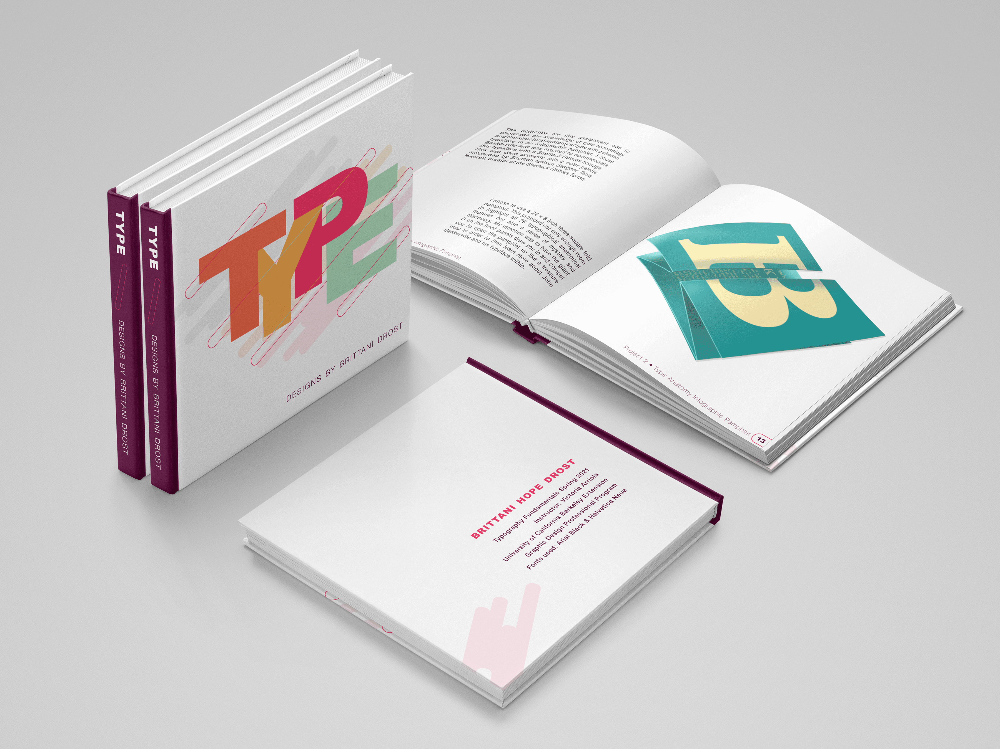
Typography Process Book
This process book chronicles my finalized projects from the Spring 2021 Typography Fundamentals course from UC Berkeley’s Extension
Program for Graphic Design. It includes a prototypface, meaning that I drafted the start of a typeface of my own design; an infographic
pamphlet which explained the history and type anatomy of the typeface Baskerville; exercises into different typesetting and type compositions,
as well as paragraph indicators and layout hierarchies; research into a historical Swiss graphic designer of our choice, which in this case
was Niklaus Troxler, who is still actively working today; and finally designs for three typeface classification posters. The latter was to
create three separate posters which harmonized as one design campaign. I chose the typefaces Minion, Adelle Sans, and Clarendon.
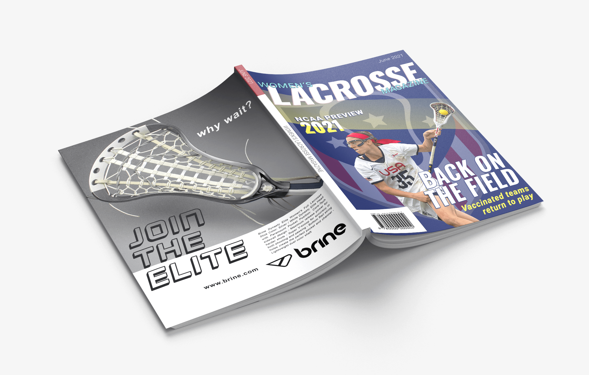
US Women’s Lacrosse Magazine Covers
Similar to past projects, I brought in my own interests into the assignment and designed a magazine cover for a sport I adored in
school: lacrosse. Women’s lacrosse is a growing pastime in the United States, and I strove to create a dynamic cover that challenged
my growing Photoshop skills and interested viewers. The back cover is a fake advertisement of my own creation for a real brand and
lacrosse stick available for purchase.
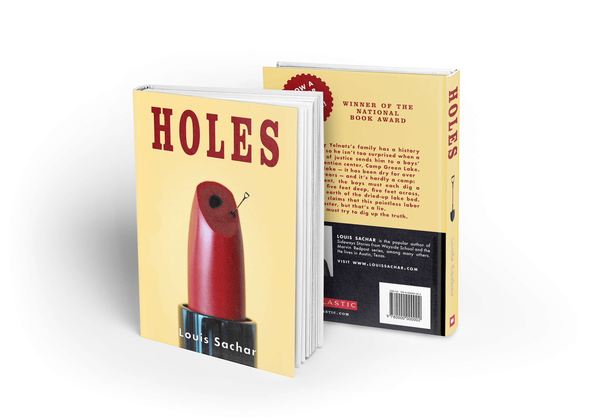
HOLES Book Redesign
HOLES by Louis Sachar is a childhood classic for Millennials, and on the surface, it is a story surrounded by masculine qualities,
such as famous Basketball shoes and digging in the dirt. But underneath the desert dust is a surprising tale about feminine heartbreak
and revenge which echoes across decades of family lines, which is what I always remember first in recalling it. I redesigned the book
cover with the goal of commemorating more of this female-oriented plot element.
While the lipstick would understandably be seen as a bit on the nose in regards to womanly showcasing, those who have read the
story before will recognize and appreciate its inclusion. For those who have not yet enjoyed the book, the small shovel and hole
at the tip of the lipstick is intended to be an enticingly strange image and hopefully compel someone to pick the book up.
I also designed the cover for more adult eyes; the book has been around for over two decades now and I found the idea of making
a 20-year anniversary cover for its original audience, who are all well into adulthood now, as an attractive idea to pursue.
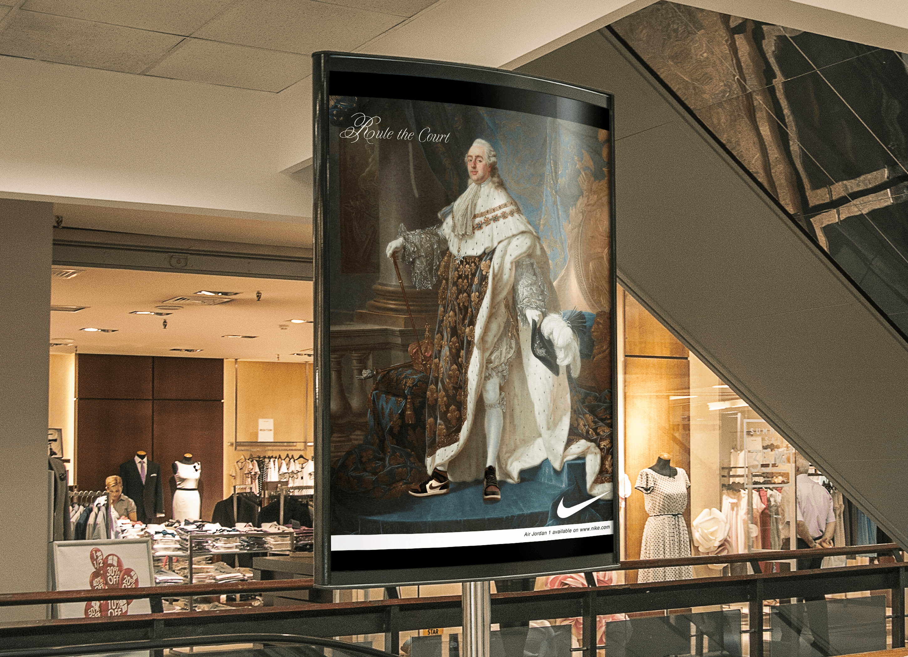
Royal NIKE Billboard Campaign
While NIKE is mostly known as a sportswear company, there is a very interesting subculture of consumers who collect the
shoes solely for their aesthetics. The purpose of this advertising campaign was to showcase NIKE as a high-end and
extravagant product by photoshopping them in the feet of royals posing for their coronation paintings. I worked to blend
the shoes into the style of each painting and make it feel as though NIKE shoes were always meant to be worn by powerful,
fashionable people. After all, similar to the royal subjects of these paintings, the NIKE company and its consumers all
want to be seen and admired for their products.
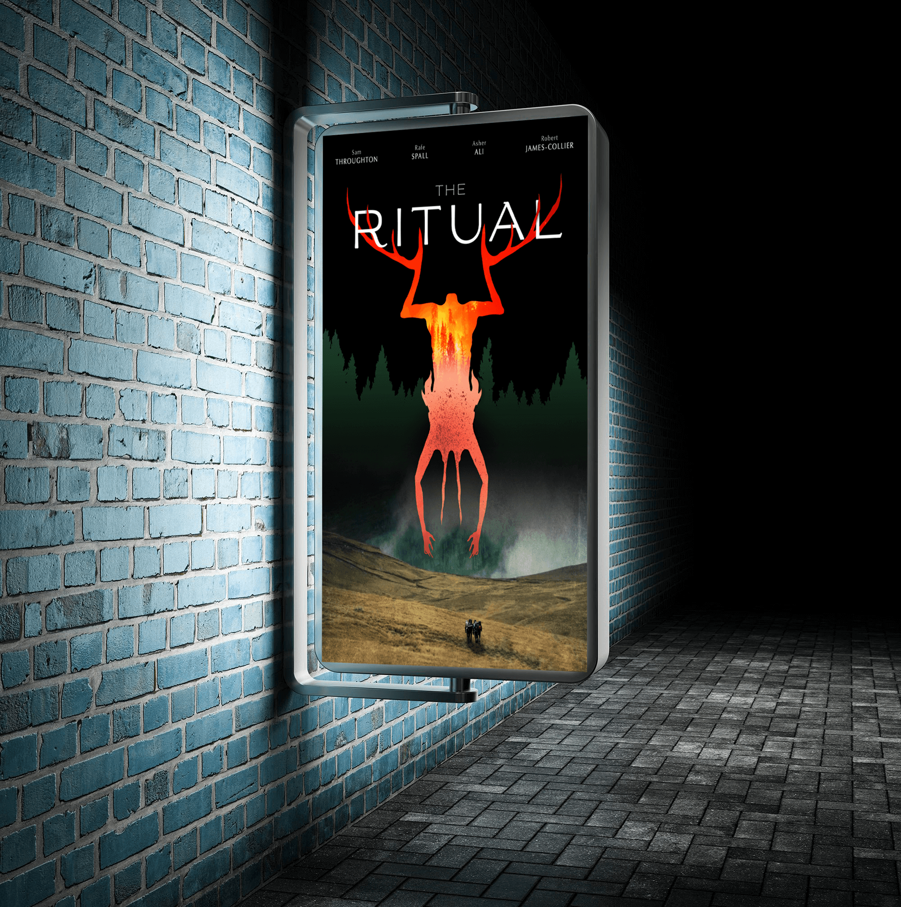
THE RITUAL Movie Campaign
THE RITUAL is a wonderfully done horror movie available on Netflix, and I chose it for this advertising campaign in order
to try my hand at a more dark and macabre design. This campaign is comprised of a movie poster, website page, and mobile
app design. I photoshopped a direct landscape shot from the movie and edited in the four hikers from one of the original
Netflix advertisements for the foreground. I also drew the strange antler-beast in the background. The beast’s design and
how it interacts with the movie title on the poster are hints to the film’s plot without being blatant to new viewers.
I ended up using the antler-beast as a framing tool to help direct the viewer’s eye, especially with the website and app layouts.
My greatest challenge of the project was reincorporating the design elements of the poster (which I designed first) into the
horizontal layout required for the webpage. However, I was able to succeed in doing so while making sure to maintain the lurid
and mysterious quality of the overall design.
Top